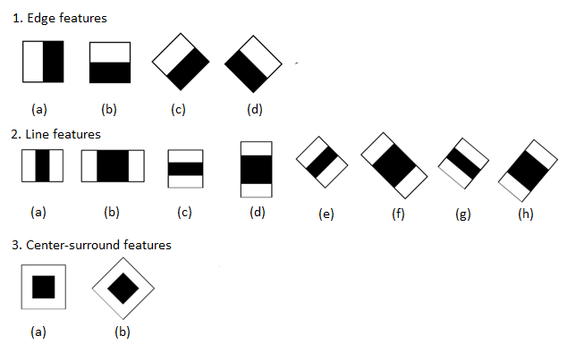
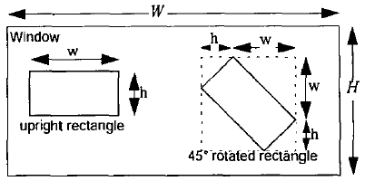
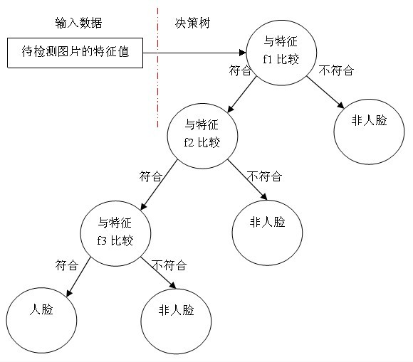

简介
当下的人脸检测主要为以下两种方法：
- 基于知识的检测方法：检测器官特征和器官之间的几何关系
- 基于统计的检测方法：像素相似性度量
基于知识的方法主要利用先验知识将人脸看作器官特征的组合，根据眼睛、眉毛、嘴巴、鼻子等器官的特征以及相互之间的几何位置关系来检测人脸。
基于统计的方法则将人脸看作一个整体的模式——二维像素矩阵，从统计的观点通过大量人脸图像样本构造人脸模式空间，根据相似度量来判断人脸是否存在。
本文主要介绍的是基于统计的检测方法Haar，Haar特征值反映了图像的灰度变化情况。通过改变特征模板的大小和位置，可在图像子窗口中穷举出大量的特征。
Haar分类器=Haar-like特征+AdaBoost算法+级联+积分图
要理解Haar分类器，那么就需要理解构成它的每一部分。
Haar-like特征：检测提供基础特征；
积分图：为了加速特征的计算而使用的算法；
AdaBoost：训练区分人脸与非人脸强分类器；
级联：把强分类器级联在一起，提高准确率。
Haar特征其数目计算
w=白色区域像素之和-黑色区域像素之和
得到的就是这个区域的一个特征值，这个特征值可以用来区分人脸与非人脸。当然，一个特征的区分度是很有限的。为了增加区分度，可以对多个矩形特征计算得到一个区分度更大的特征值，然而在一个窗口中怎样排列能够更好的体现人脸的特征，这是未知的所以需要AdaBoost算法去训练找到，在训练前需要将每种组合穷举出来，为了增加计算特征值的速度，使用了积分图（单独写一篇文章）。

特征数计算
比如上图中的1(a)特征，特征大小为2x1，在24x24的图像上，水平可滑动23步，垂直可滑动24步。当特征水平放大为4*1后，水平滑动步数为24-4+1=21步数。其步数随特征放大递减，python代码可表示为range(1,23+1,2)，总共个数为sum(range(1,23+1,2))=144。同理垂直方向计算得到的特征总个数为sum(range(1,24+1,1))=300。整个1(a)的特征个数为144*300 = 43200。
1 | def getHaar(W,H,w,h): |
同理其它类型的特征数目也可以计算得到。但是，对于45rotated的特征，其矩形框的宽，高（w,h）表示如图所示。W,H为图片大小。

训练
下图是我们用三个Haar-like特征f1，f2，f3来判断输入数据是否为人脸。

一个弱分类器就是一个基本和上图类似的决策树，最基本的弱分类器只包含一个Haar-like特征，也就是它的决策树只有一层，被称为树桩（stump）。
弱分类器的训练即是找到一个分类阈值使其成为最优弱分类器。
寻找的步骤：
1.对于每个特征f，计算所有训练样本的特征值，并按特征值大小排序。
2.扫描排序好的特征值，对排序好的每个元素，计算四个值。
3.全部人脸样本的权重之和t1;
4.全部非人脸样本的权重之和t0;
5.在此元素之前的非人脸样本的权重之和s0；
6.最终得到每个元素的分类误差r=min((s1+(t0-s0)),(s0+(t1-s1)))
7.寻找r值最小的元素作为最优阈值。
补充
这最优的weak classifier是这么得来的，比如说对于特征A 我们用特征A对所有样本取特征值，然后根据特征值排序所有样本，可以想象，具有明显人脸特征的样本和具有明显非人脸特征的样本应该分别处于这个排序的两端，但肯定有一些样本 不是那么明显就能被A特征区分开，我们要做的是在其中取一个阈值。想象一个点在排好序的直线上滑动 滑动到某一个位置，使得我们能够最好的用特征A区分人脸和非人脸，也就是说，错误率最低，若得到这个阈值，则此时我们找到一个相对特征A的最优weak classifier。由此类推，对所有的特征都如法炮制。我们会得到对应于n个特征的n个最优weak classifier，从里面选一个最最优的，最后得出你想要的那个最优weak classifier。
强分类器的诞生需要T轮的迭代，具体操作如下：
- 给定训练样本集S，共N个样本，其中X和Y分别对应于正样本和负样本； T为训练的最大循环次数；
- 初始化样本权重为1/N ，即为训练样本的初始概率分布；
- 第一次迭代训练N个样本，得到第一个最优弱分类器。
- 提高上一轮中被误判的样本的权重；
- 将新的样本和上次本分错的样本放在一起进行新一轮的训练。
- 循环执行4-5步骤，T轮后得到T个最优弱分类器。
- 组合T个最优弱分类器得到强分类器。
论文列表：
【1】《Rapid Object Detection using a Boosted Cascade of Simple Features》
【2】《Robust Real-Time Face Detection》
【3】《An Extended Set of Haar-like Features for >Rapid Object Detection》
【4】《Crytographic Limitations on Learning Boolean Formulae and Finite Automata》
【5】《A Theory of the Learnable》
【6】《The Computational Complexity of Machine Learning》
【7】《The Strength of Weak Learnability》
【8】《Boosting a weak learning algorithm》
【9】《A Decision-Theoretic Generalization of On-Line Learning and an Application to Boosting》
https://www.cnblogs.com/ello/archive/2012/04/28/2475419.html